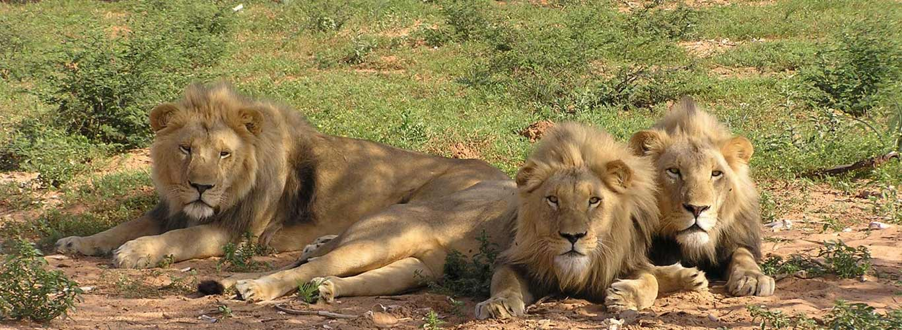

Gujarat is the dream of an explorer who quest for nature and wild life. Gujarat possesses varied Landforms with the dry deciduous forests, majestic grasslands, marine ecosystems, wetlands and rich moist deciduous forests. These habitats are home to rare wild life inhabitants. The Land of the Legends is symbolically known for its wildlife icon of Lions that are found in the Gir reserve and happen to be a major attraction for tourists in Gujarat.
